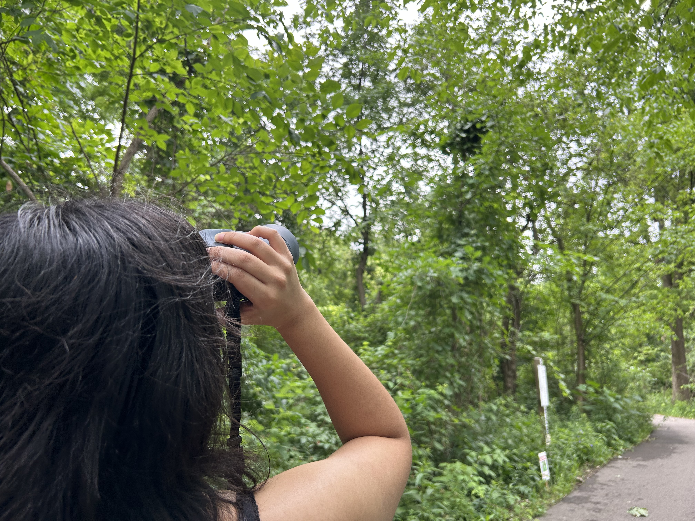

Intro
Hello! I'm Sanjeda, a Computer Science student at Wayne State University. With a passion for technology and innovation, I am dedicated to learning and creating solutions that make a difference. I am currently honing my Data Analytic skills and have a keen interest in Data Science and Analytics.
Experience
As a Software Engineering Fellow at Headstarter AI, I am engaged in AI projects that aim to drive technological advancement and efficiency. My primary focus includes working on a project that analyzes a startup's existing backlog and develops solutions to meet business requirements. This role allows me to delve into AI technologies and contribute to impactful solutions for emerging businesses.
In my role as a Supplemental Instruction (SI) Leader at Macomb Community College, I am dedicated to enhancing student learning and success in challenging courses. The Supplemental Instruction program targets courses with high drop rates and provides students with resources to build lifelong skills, improve retention, and learn effectively. My responsibilities include developing structured lesson plans and review materials that clarify and reinforce student understanding as well as leading group study sessions to foster collaborative learning and improve students' problem-solving skills.
About Me

When I'm not coding, I enjoy exploring a variety of interests and hobbies that keep me inspired and balanced. Here are a few of my favorite activities:
- Hiking and Outdoor Adventures: I love spending time in nature, hiking trails, and exploring new landscapes.
- Baking: Experimenting with new recipes and perfecting my baking skills is a passion of mine. There's something satisfying about creating delicious treats from scratch.
- Gaming: I enjoy playing video games, especially those that challenge my strategic thinking and problem-solving skills. It's a great way to unwind and connect with friends.
Contact
I'm always open to discussing new opportunities or collaborations. Feel free to reach out to me through any of the following channels: